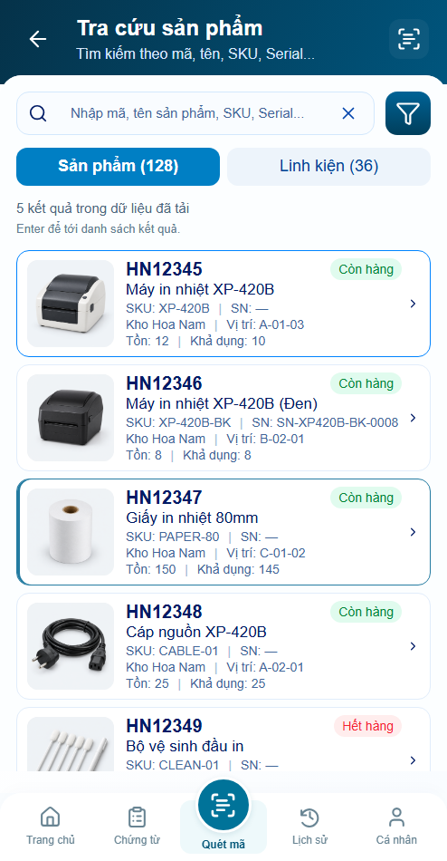
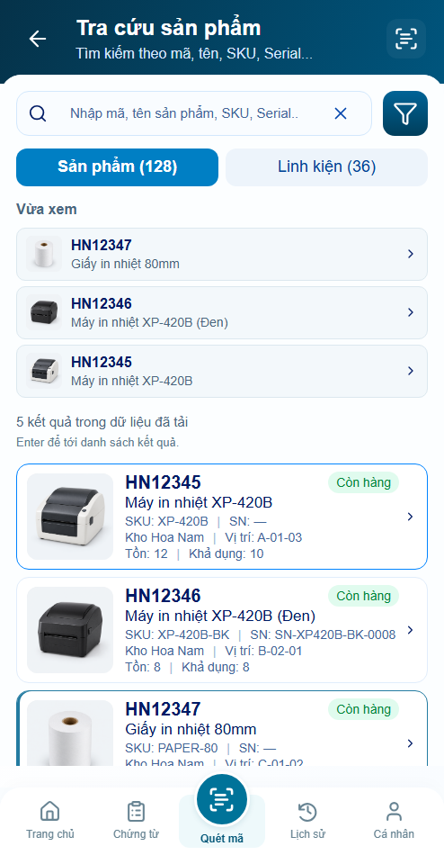
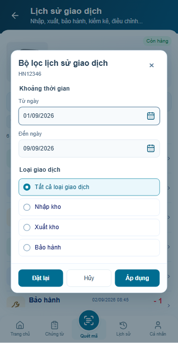
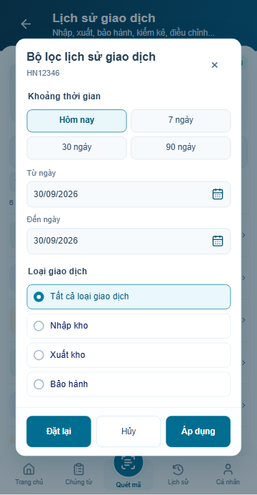
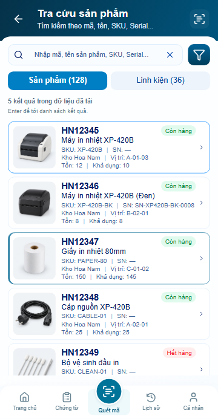
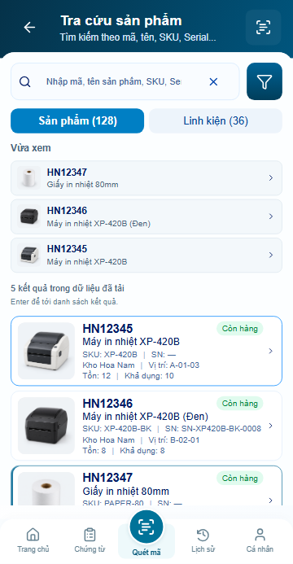

P06 · Vừa xem và khoảng ngày nhanh
Adaptation theo yêu cầu30/09/2026, hình thức chờ user review. Cùngviewport,DPR1,clock và fixture. Không sửafooter hoặc baseline.
Báo cáo · Nguồn thiết kế
Danh sách sau khi xem3sản phẩm ·494×1000
Trước
Sau: tối đa3hàng Vừa xem, count nguồn riêng
Bộ lọc ngày ·360×800
Trước
Sau: dùng đúngquickRangesP08;Applymới lưu
Danh sách ·360×800
Trước
Sau